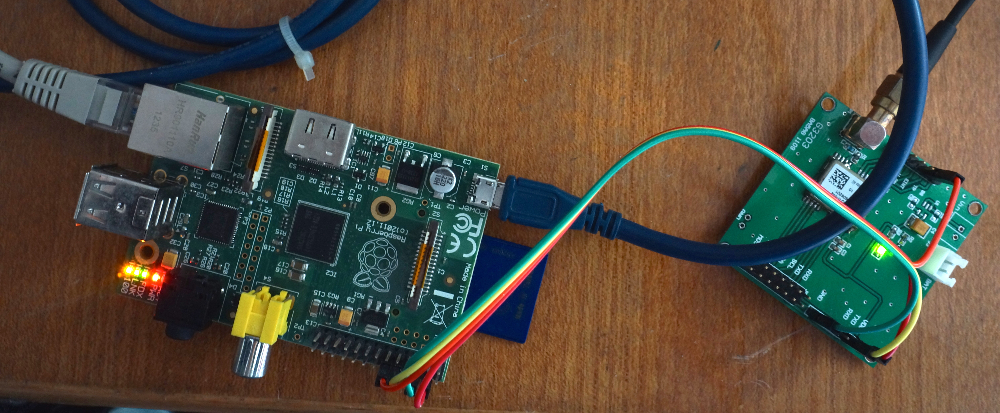
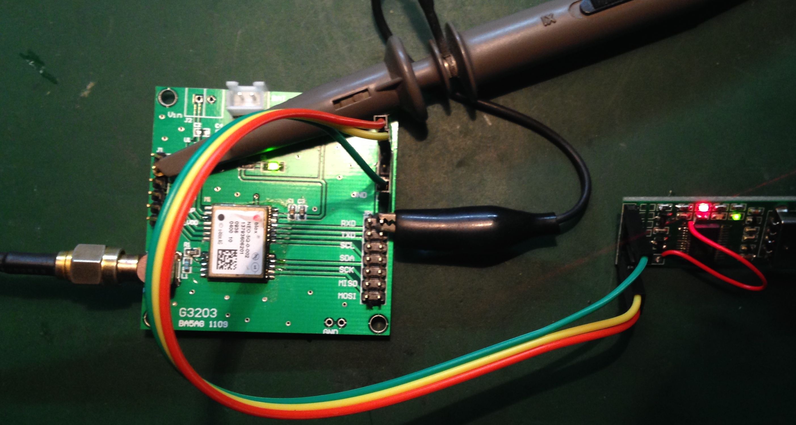
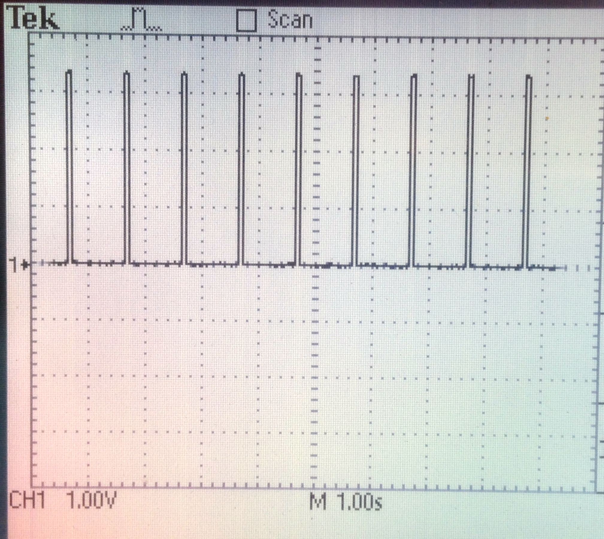
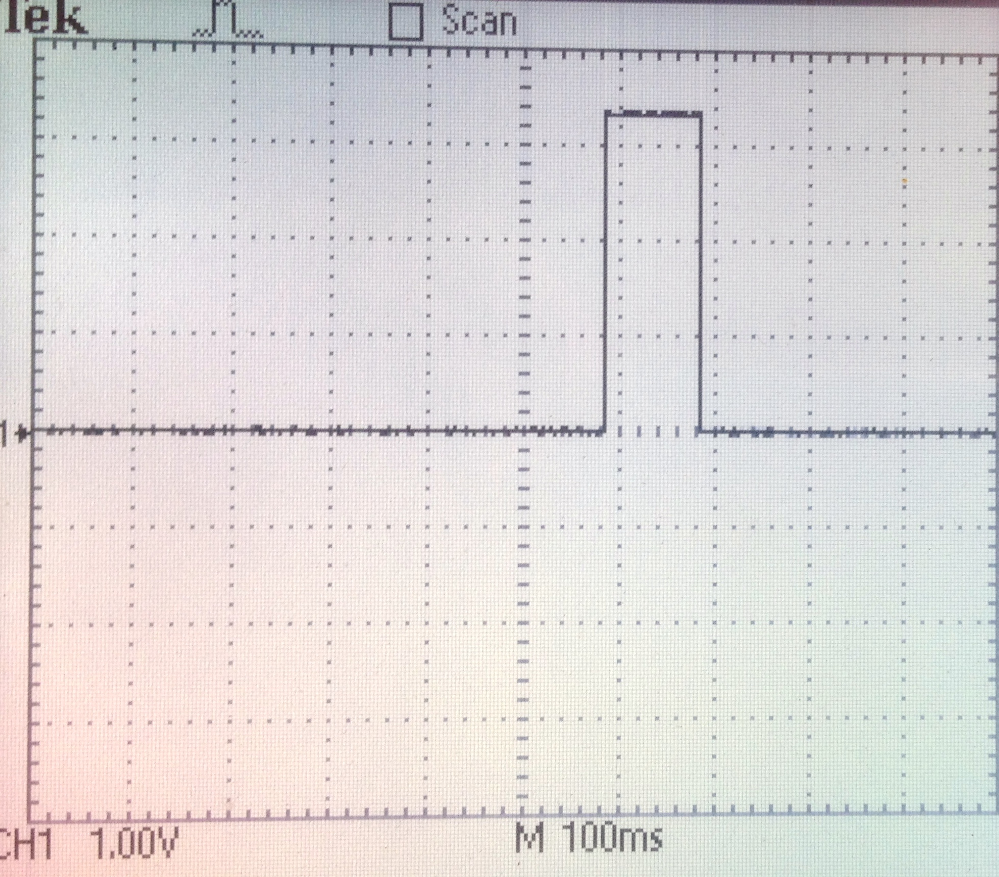
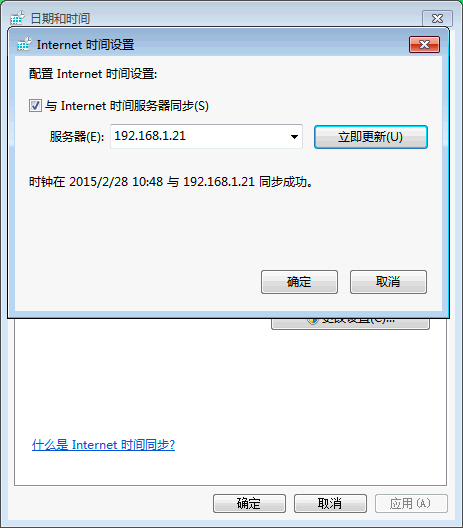

ba5agkai at gmail.com 2015-02-28

从树莓派官网 http://raspberrypi.org 的下载页面下载Raspbian的最新版本。这次下载到的是2014年12月24日发布的版本。因为速度实在太慢，下了Torrent的种子，由bt软件去下载了。
这次下载得到的文件是：2014-12-24-wheezy-raspbian.img 。
准备了8G的SD卡，把SD卡插入Mac，先mount看一下：
/dev/disk2s1 on /Volumes/Untitled (ntfs, local, nodev, nosuid, read-only, noowners)
说明会这个SD卡被识别为/dev/disk2。
在Finder里关闭这个盘，然后：
sudo dd if=2014-12-24-wheezy-raspbian.img of=/dev/disk2 bs=1m
dd完成后，这个盘会被自动mount回来，卷标是boot。打开，找到其中的cmdline.txt文件，编辑。将其中的
dwc_otg.lpm_enable=0 console=ttyAMA0,115200 kgdboc=ttyAMA0,115200 console=tty1 root=/dev/mmcblk0p2 rootfstype=ext4 elevator=deadline rootwait
改成
dwc_otg.lpm_enable=0 console=tty1 root=/dev/mmcblk0p2 rootfstype=ext4 elevator=deadline rootwait
这样就不会在启动时将串口用做终端了。
上电后，在路由器管理页面上找到这个树莓派，将它的IP地址静态分配为192.168.1.21。
ssh进入，默认用户pi，默认密码raspberry。先做基本配置：
sudo raspi-config
这些菜单项需要做一下：
1 Expand Filesystem
进去把SD卡扩展一下
2 Change User Password
修改默认密码
4 Internationalisation Options
I2 Change Timezone
修改为亚洲/上海
8 Advanced Options
A2 Hostname
修改为NTPSRV
A7 Serial
禁止串口上的shell
最后重启一下RPi。
因为RPi是默认装了ntpd的，所以再起来以后，你会发现时间已经是正确的了。
先来刷新、更新：
sudo apt-get update
sudo apt-get upgrade
sudo apt-get dist-upgrade
sudo rpi-update
做完后，检查一下：
uname -a
得到
Linux NTPSRV 3.12.35+ #733 PREEMPT Tue Jan 6 21:03:44 GMT 2015 armv6l GNU/Linux
sudo apt-get install picocom
然后就可以进picocom看一下：
picocom /dev/ttyAMA0
这是默认的开始界面：
picocom v1.7
port is : /dev/ttyAMA0
flowcontrol : none
baudrate is : 9600
parity is : none
databits are : 8
escape is : C-a
local echo is : no
noinit is : no
noreset is : no
nolock is : no
send_cmd is : sz -vv
receive_cmd is : rz -vv
imap is :
omap is :
emap is : crcrlf,delbs,
Terminal ready
Ctrl-A然后Ctrl-X退出picocom。
G3203是基于U-Blox NEO 5Q做的GPS板，板上除了UART输出的NMEA-0183数据外，也会输出PPS。
图2-1是测试PPS信号的电路连线：  右边的USB串口板同时给GPS供电。示波器探头接在PPS输出上。G3203的J1的2脚标着TP，意思是time pulse，就是5Q的PPS输出。
图2-2是PPS信号，从中可以看出每秒一个正脉冲： 
图2-3是放大的PPS信号，从中可以看出脉冲宽度是100ms： 
图3-1是RPi的GPIO插座的定义：
可以看出，接GPS的串口数据时需要用到
与G3203的J4连接如下：
| RPi | G3203 | 说明 |
|---|---|---|
| P1-04 | J4-1 | 5V |
| P1-06 | J4-6 | Ground |
| P1-10 | J4-2 | G3203's TXD -> RPi's RXD |
| P1-18 | J1-2 | PPS |
连接完成后，在RPi上启动picocom，就能看到GPS的输出。

首先修改启动配置：
sudo vi /boot/cmdline.txt
在行末加上（用大写的A就可以直接到行末去添加）
bcm2708.pps_gpio_pin=18
然后，
#2020-12-19修改： 修改boot/config.txt，sudo vi /boot/config.txt
dtoverlay=pps-gpio,gpiopin=18
sudo vi /etc/modules
在最后加上：
pps-gpio
重启后，就可以看到/dev/pps0。lsmod也可以看到ppsgpio和ppscore两个模块了。
安装pps-tools：
sudo apt-get install pps-tools
可以测试PPS了：
sudo ppstest /dev/pps0
得到：
trying PPS source "/dev/pps0"
found PPS source "/dev/pps0"
ok, found 1 source(s), now start fetching data...
source 0 - assert 1421066632.974111422, sequence: 1698 - clear 0.000000000, sequence: 0
source 0 - assert 1421066633.974045488, sequence: 1699 - clear 0.000000000, sequence: 0
安装gpsd：
sudo apt-get install gpsd gpsd-clients python-gps
启动gpsd：
sudo gpsd /dev/ttyAMA0 -n -F /var/run/gpsd.sock
查看gps数据：
cgps -s
得到：
┌───────────────────────────────────────────┐┌─────────────────────────────────┐
│ Time: 2015-01-12T13:11:51.000Z ││PRN: Elev: Azim: SNR: Used: │
│ Latitude: 30.282909 N ││ 3 17 263 34 Y │
│ Longitude: 120.106591 E ││ 8 54 346 31 Y │
│ Altitude: 55.9 m ││ 9 00 323 00 Y │
│ Speed: 0.0 kph ││ 14 18 150 41 Y │
│ Heading: 0.0 deg (true) ││ 16 60 279 37 Y │
│ Climb: 0.0 m/min ││ 19 06 196 16 Y │
│ Status: 3D FIX (13 secs) ││ 20 06 293 00 Y │
│ Longitude Err: +/- 2 m ││ 21 07 098 00 Y │
│ Latitude Err: +/- 2 m ││ │
│ Altitude Err: +/- 6 m ││ │
│ Course Err: n/a ││ │
│ Speed Err: +/- 17 kph ││ │
│ Time offset: 0.639 ││ │
│ Grid Square: PM00bg ││ │
└───────────────────────────────────────────┘└─────────────────────────────────┘
配置gpsd会在系统启动时装载：
sudo dpkg-reconfigure gpsd
注意当询问运行选项时，要加上-n来保证启动的时候会连接GPS。
RPi自带的nptd是一个裁剪版，不支持PPS，所以得自己下载源码编译一个。
先安装libcap-dev：
sudo apt-get install libcap-dev
然后从： http://archive.ntp.org/ntp4/ 找到最新的ntpd版本，下载在rpi上：
wget http://archive.ntp.org/ntp4/ntp-4.2.8p1.tar.gz
解压、配置、编译：
tar xzf ntp-4.2.8p1.tar.gz
cd ntp-4.2.8p1/
./configure --enable-linuxcaps
配置要花不少时间，在我的RPi上用了13分钟。
然后make：
make
编译也要不少时间，我用了20分钟。先安装到/usr/local：
sudo make install
停下现在的ntpd：
sudo service ntp stop
拷贝文件：
sudo cp /usr/local/bin/ntp* /usr/bin/
sudo cp /usr/local/sbin/ntp* /usr/sbin/
启动ntpd:
sudo service ntp start
编辑ntp.conf:
sudo vi /etc/ntp.conf
在所有的server行之前加上：
# Server from shared memory provided by gpsd
server 127.127.28.0 minpoll 4 maxpoll 4
fudge 127.127.28.0 time1 0.000 refid GPS stratum 15
# Kernel-mode PPS ref-clock for the precise seconds
server 127.127.22.0 minpoll 4 maxpoll 4
fudge 127.127.22.0 flag3 1 refid PPS
并把原本的4行server改成：
server 0.debian.pool.ntp.org minpoll 10 maxpoll 15 iburst prefer
server 1.debian.pool.ntp.org minpoll 10 maxpoll 15 iburst
server 2.debian.pool.ntp.org minpoll 10 maxpoll 15 iburst
server 3.debian.pool.ntp.org minpoll 10 maxpoll 15 iburst
然后重新启动ntpd：
sudo service ntp restart
查看一下ntpd的连接情况：
ntpq -crv -p
associd=0 status=011b leap_none, sync_pps, 1 event, leap_event,
version="ntpd 4.2.8p1@1.3265 Thu Feb 26 13:54:39 UTC 2015 (1)",
processor="armv6l", system="Linux/3.12.35+", leap=00, stratum=1,
precision=-18, rootdelay=0.000, rootdisp=1.165, refid=PPS,
reftime=d899ab44.a7651f4e Thu, Feb 26 2015 22:25:08.653,
clock=d899ab50.198f4bd4 Thu, Feb 26 2015 22:25:20.099, peer=64998, tc=4,
mintc=3, offset=0.187453, frequency=-42.887, sys_jitter=0.362315,
clk_jitter=18.806, clk_wander=0.120
remote refid st t when poll reach delay offset jitter
==============================================================================
SHM(0) .GPSD. 15 l 13 16 377 0.000 -129.68 1.609
oPPS(0) .PPS. 0 l 12 16 377 0.000 0.187 0.362
*dns.sjtu.edu.cn 79.213.241.147 3 u 34 32 41 15.281 -0.708 76.747
+dns1.synet.edu. 202.118.1.46 2 u 7 32 27 53.652 -0.970 75.937
需要等候一点时间才会看到PPS起作用。
这里的字段含义是：
注意到这里GPS的数据有130ms的误差，重新编辑ntp.conf，把这个误差做进去：
fudge 127.127.28.0 time1 +0.130 refid GPSD stratum 15
再次编辑/etc/ntp.conf，找到restrict段：
# Local users may interrogate the ntp server more closely.
restrict 127.0.0.1
restrict ::1
在其后加上：
restrict 192.168.1.0 mask 255.255.255.0 nomodify
这样就允许本地LAN内的机器获得时间数据了。
如果在上面那条配置中，把最后的nomodify去掉，则可以从本地机器上直接查看ntpd的情况，如：
ntpq -p 192.168.1.21
如果你的ntp服务器的ip是21的话。
在Windows上，可以调整Internet时间服务器的地址为自己的：

gpsd — a GPS service daemon，http://catb.org/gpsd/
The Raspberry Pi as a Stratum-1 NTP Server， http://www.satsignal.eu/ntp/Raspberry-Pi-NTP.html
GPSD Time Service HOWTO，http://catb.org/gpsd/gpsd-time-service-howto.html